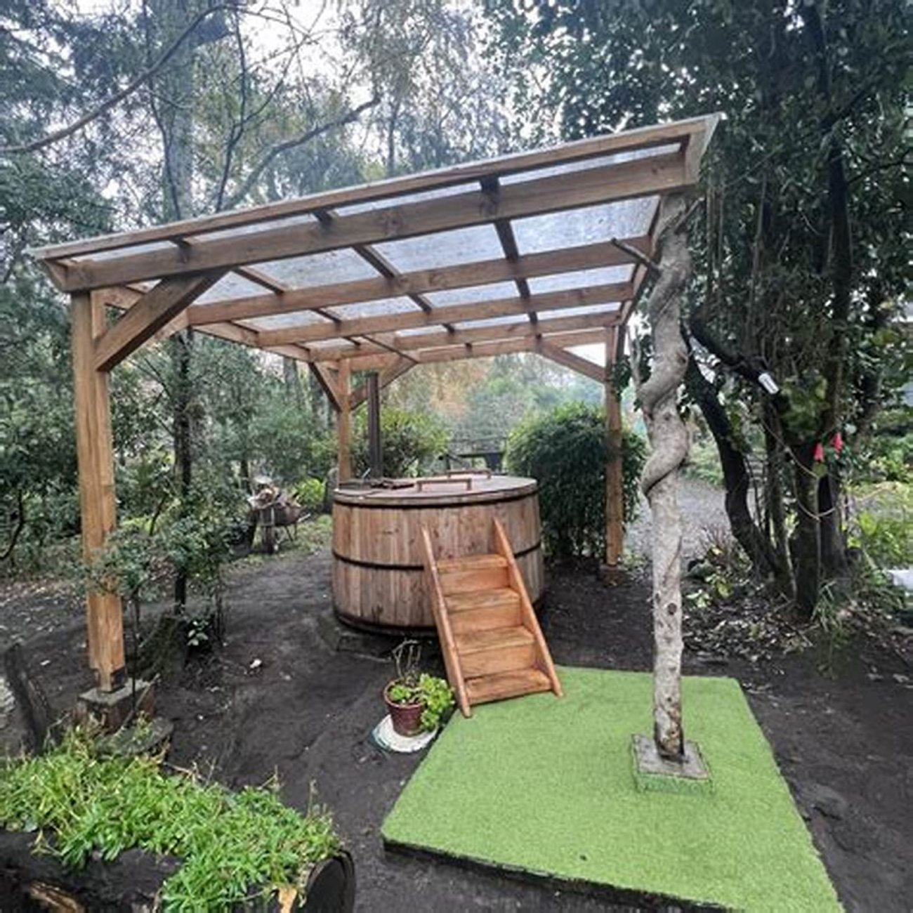
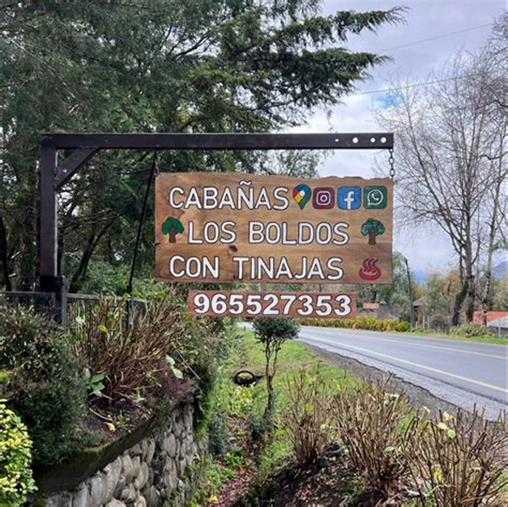
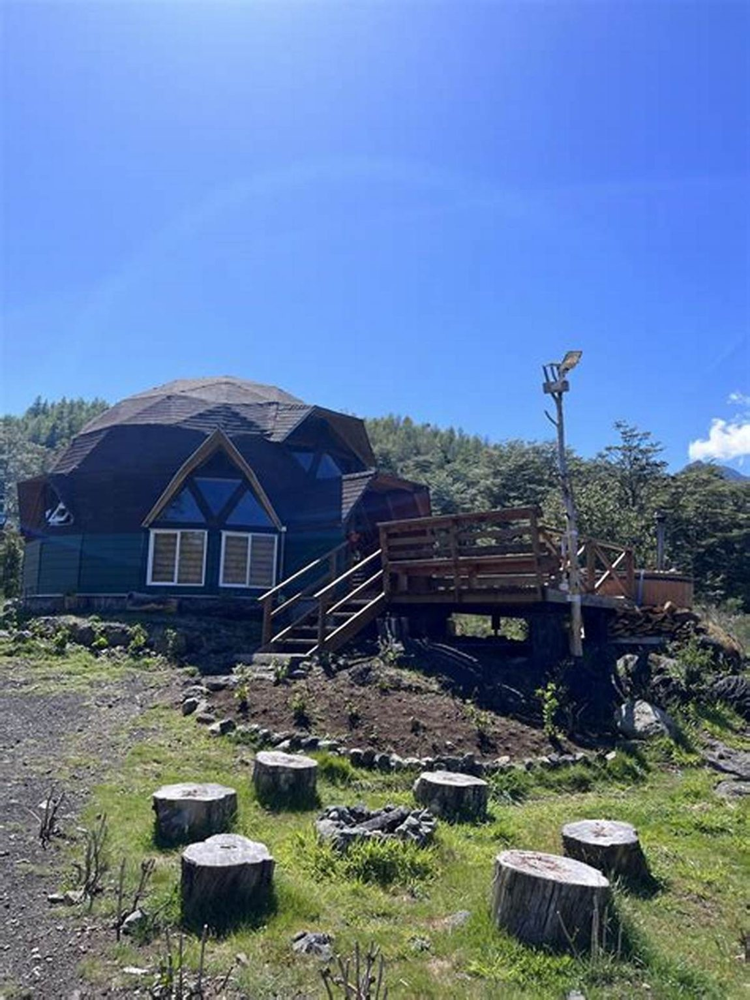
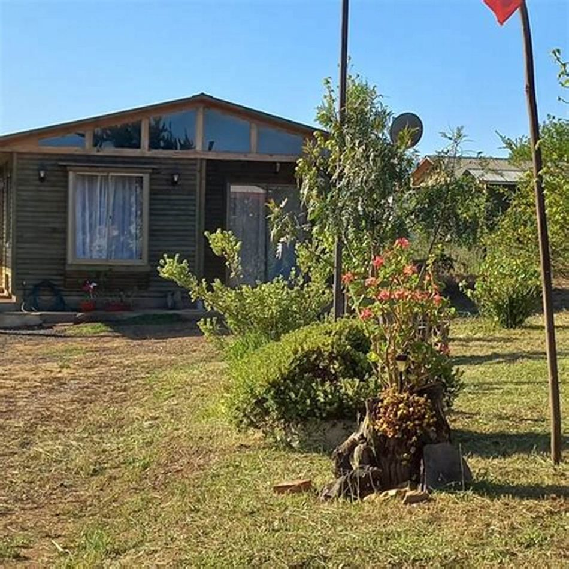
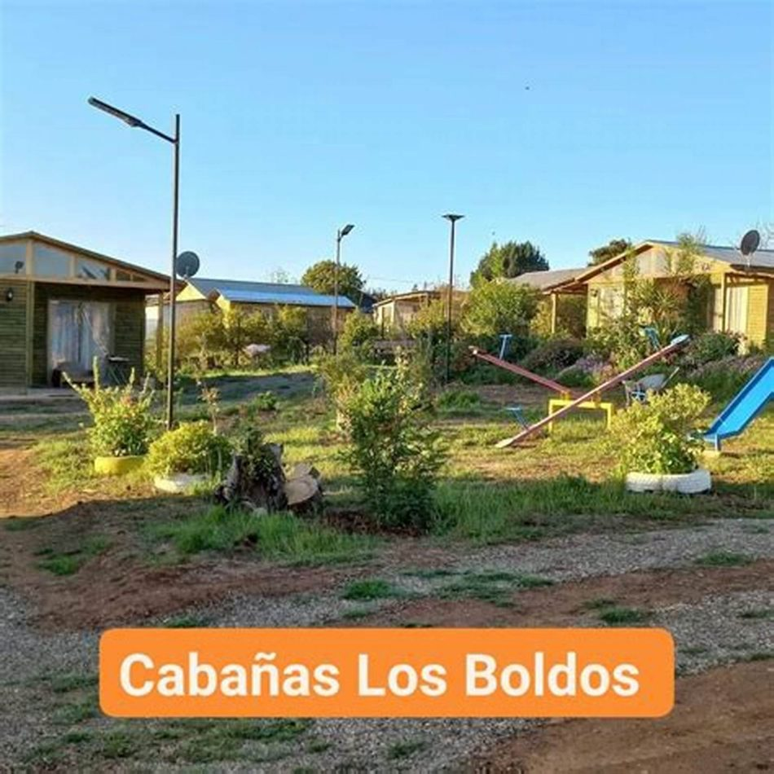

Cabañas con tinaja · Coñaripe
¿A qué hora
la tengo lista?
Es la pregunta de todo el que arrienda una cabaña con tinaja, y la que decide si la noche sale bien o si termina esperando en pijama a que el agua se caliente. La respuesta no es difícil: es que nadie la escribe.
- nota en Google
- 5,0
- reseñas
- 49
- teléfono
- +56 9 6552 7353
Paso 01
Encender
La tinaja se calienta a leña. Eso significa que no es un interruptor: alguien tiene que prender el fuego y el agua tiene que subir de temperatura sola, a su ritmo. Todo lo que sigue de esta página existe porque ese ritmo hay que coordinarlo.
- Cuántas horas tarda en estar lista
- falta: las horas reales Es el dato central de toda la página y el que no voy a inventar por ningún motivo: depende del tamaño de la tinaja, de la leña y del día. Un número equivocado acá arruina la noche que se vino a comprar.
- Con cuánta anticipación hay que avisar
- falta: el plazo «Avisando en la mañana» o «al reservar» son dos respuestas distintas y las dos sirven. Lo que no funciona es que el huésped lo pida al llegar y se entere ahí de que no alcanza.
- Quién la prende
- falta: confirmar Si la prenden ustedes, eso es servicio y hay que decirlo. Si la prende el huésped, hay que explicarle cómo.
- Si la leña de la tinaja está incluida
- falta Es distinta de la leña de la estufa y se consume mucho más rápido. Conviene aclararlo por separado.
Paso 02
Temperar
Mientras el agua sube, hay decisiones que ya deberían estar tomadas: cuántos van a entrar, si se puede usar dos veces en el mismo día, y qué pasa si el grupo es más grande de lo que la tinaja aguanta.
- Cuánta gente entra cómoda
- falta: la capacidad «Entran seis» y «entran seis cómodos» son cosas distintas. El número honesto evita que una familia de cinco reserve pensando que van a caber todos a la vez.
- Qué incluye el arriendo de la tinaja
- falta: si va aparte o incluida Y si va aparte, cuánto cuesta. Es la pregunta que más se hace por teléfono y la que más incomoda preguntar.
- Cuánto rato se mantiene caliente
- falta Saber que se puede estar dos horas o que hay que aprovechar la primera cambia cómo se organiza la noche.
- Si hay toallas y dónde cambiarse
- falta Salir mojado al frío de Coñaripe en julio con la toalla en la cabaña de al lado es un detalle que se recuerda.
Paso 03
Entrar
Cuando el agua está, está. Lo único que queda por decir es a qué hora conviene entrar y qué reglas hay — que en una tinaja a leña no son capricho: son seguridad, porque hay fuego encendido al lado del agua.
- A qué hora suele quedar lista
- falta Con el horario y las horas de calentado, el huésped calcula solo y deja de preguntar.
- Reglas de uso
- falta: las que ustedes aplican Hasta qué hora se puede usar, si se permite bebida adentro, qué no se puede hacer cerca del fuego. Escritas antes, nadie las discute.
- Si hay que avisar cuando se termina
- falta Para apagar el fuego y para que el agua se maneje bien.
Lo que esta página no dice, a propósito. No hay ni una palabra sobre beneficios para la salud, propiedades del agua ni efectos terapéuticos. Una tinaja es descanso, no un tratamiento, y prometer otra cosa en internet es meterse donde no corresponde. Lo que se vende acá es una noche buena, que ya es bastante.

La foto que casi ningún competidor tiene
Ésta es la tinaja. La de verdad, no una de catálogo
Hay páginas de cabañas con tinaja que muestran una tinaja de banco de imágenes: se nota, y el que llega se siente estafado antes de entrar. Ésta es la de Los Boldos, con su pérgola, su escalerita y el pasto de al lado. Se calienta a leña y por eso tarda: hay que avisar el día anterior. Eso también está escrito más arriba, porque es la pregunta que llega por WhatsApp todas las semanas.
La otra mitad de la noche
Después
del agua
Salir de la tinaja en julio y encontrarse una cabaña fría arruina todo lo anterior. La secuencia completa —agua, estufa, cama— es el producto de verdad, y contarla así es lo que separa esto de «cabaña con tinaja».
-
01
El agua
Lo que se vino a hacer. Con el fuego al lado y el frío afuera.
-
02
La estufa
Que la cabaña esté tibia cuando se sale del agua no es un detalle: es la mitad de la experiencia. falta: confirmar si la dejan prendida
-
03
La cama
Y dormir. Es todo. Nadie que arrienda una cabaña con tinaja en invierno está buscando otra cosa.
Tres pasos escritos en cinco líneas. Es más argumento de venta que cualquier galería de fotos, y hoy no está en ninguna parte.
Descanso, no tratamiento
Una tinaja es agua caliente y silencio
Para coordinar la tinaja
+56 9 6552 7353
Es el número publicado en su ficha de Google. La tinaja se coordina, y eso no es un problema de la página: es cómo funciona una tinaja a leña. Lo que sí puede hacer la página es que se coordine antes y no en la puerta.
Lo que sí es de ellos
Las fotos de arriba son suyas, sacadas de su propio Facebook. Los fondos de bosque en niebla no lo son y están declarados en imagenes/FUENTES.txt: se pusieron ahí porque una tinaja de banco de imágenes se nota de lejos, y esa sí que no se puso.


falta: la tinaja llena y humeando, de noche — es la foto que vende la página entera

